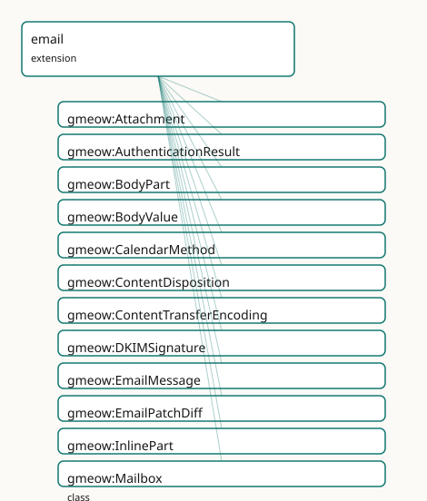

GMEOW Email Module
- IRI: https://blackcatinformatics.ca/gmeow/slices/email
- Tier: extension
Group: extensions
What This Slice Covers
This slice owns 168 terms and contributes 41 mapping or projection rows. Use it when its terms match the native fact you want to preserve; use the linkage tables to see how those facts leave GMEOW for consumer vocabularies.
Dependencies
gmeow:slices/accountsgmeow:slices/contactsgmeow:slices/documentsgmeow:slices/entitiesgmeow:slices/eventsgmeow:slices/kernelgmeow:slices/temporalgmeow:slices/trust
Consumers
- The mail corpus: the dogfooded message model over core contacts/accounts.
Local Map

Terms
Classes
| Term | Label | Definition |
|---|---|---|
gmeow:Attachment |
Attachment | A non-inline body part presented as an attached file. An attachment may also be a gmeow:Document or gmeow:MediaObject (the two are not disjoint), and its text... |
gmeow:AuthenticationResult |
Authentication Result | The outcome of an email authentication check (RFC 8601 Authentication-Results) — a method (DKIM, SPF, DMARC, ARC), a verdict, and the verifying server. |
gmeow:BodyPart |
Body Part | A MIME part of a message's body, with a media type and content. |
gmeow:BodyValue |
Body Value | A decoded body-content object stored as a separate information object, typically the result of extracting or decoding a MIME BodyPart. Linked to its source Bod... |
gmeow:CalendarMethod |
Calendar Method | The iCalendar METHOD of a calendar component carried by an email — a VALUE vocabulary (individuals, never subclasses). Aligned to RFC 5546/iTIP: REQUEST, REPLY... |
gmeow:ContentDisposition |
Content Disposition | The presentation disposition of a body part — inline (displayed as part of the message body) or attachment (presented as a separate file). An open value vocabu... |
gmeow:ContentTransferEncoding |
Content Transfer Encoding | The MIME content-transfer-encoding of a body part — the mechanism by which the part's content is encoded for transport. An open value vocabulary (individuals,... |
gmeow:DKIMSignature |
DKIM Signature | A DomainKeys Identified Mail signature (RFC 6376) over selected headers and the body. |
gmeow:EmailMessage |
Email Message | An RFC 5322 email message, with headers, participants, a thread, body parts and mailbox residence. |
gmeow:EmailPatchDiff |
Email Patch Diff | A patch or diff artifact between email body or header states, typically between a variant message and its canonical counterpart. Treated as a MIME-like BodyPar... |
gmeow:InlinePart |
Inline Part | A body part displayed inline within the message body, such as an embedded image or a text/html part rendered as part of the message content. Distinct from Atta... |
gmeow:Mailbox |
Mailbox | A named container of messages within an account — a folder, JMAP mailbox, or Gmail label. |
gmeow:MailboxResidence |
Mailbox Residence | The reified, time-scoped fact that a message resided in a mailbox/label over an interval (membership is time-varying — messages move between folders and labels... |
gmeow:MailingList |
Mailing List | An email distribution list — an InformationObject identified by a List-Id and serving as the hub for list metadata, subscription, and archiving. |
gmeow:Message |
Message | A communication sent from one agent to others — the parent of email and other message kinds. |
gmeow:MessageHeader |
Message Header | A single RFC 5322 header field (name and value) of a message. |
gmeow:MessageKeyword |
Message Keyword | A flag/keyword applied to a message (IMAP flag or JMAP keyword) such as seen, flagged, answered, draft, forwarded, or junk. |
gmeow:MessageKind |
Message Kind | The behavioral or report kind of a message — a VALUE vocabulary (individuals, never subclasses). Categories can overlap (a bounce is also auto-generated; a rea... |
gmeow:MessageParticipant |
Message Participant | A reified occurrence of an email address in a particular message header or envelope context. |
gmeow:MessageParticipantRole |
Message Participant Role | The role an address occurrence plays in a message header or envelope. |
gmeow:MultipartBodyPart |
Multipart Body Part | A MIME container part that holds other body parts — the structural node of a multipart/alternative, multipart/mixed, multipart/related, or other multipart subt... |
gmeow:MultipartType |
Multipart Type | The MIME multipart subtype of a MultipartBodyPart — an open value vocabulary (individuals, never subclasses). Standard subtypes are seeded; new subtypes (e.g.... |
gmeow:RelayHop |
Relay Hop | One hop in a message's delivery path, recorded by a Received header: a relaying server, the host it received from, a server timestamp, and the protocol used. |
gmeow:Thread |
Thread | A conversation: a set of messages related by reply/reference chains. |
Properties
| Term | Label | Definition |
|---|---|---|
gmeow:analysisInputBodyLine |
analysis input body line | The specific body line used as input for line-based fingerprinting, when the importer performs line-scoped analysis. |
gmeow:analysisScope |
analysis scope | What portion of the message was analyzed when producing content fingerprints (e.g. 'headers+body', 'body-only', 'body-no-sig'). The scope value is importer-def... |
gmeow:authMethod |
authentication method | The authentication method checked: dkim, spf, dmarc, arc, iprev, or auth. |
gmeow:authResult |
authentication result | The verdict of an authentication check: pass, fail, none, softfail, neutral, temperror, or permerror. |
gmeow:authServer |
authentication server | The authentication-serv-id (authserv-id) that performed the check. |
gmeow:autoSubmitted |
auto submitted | The raw Auto-Submitted header value of an email message per RFC 3834 (e.g. auto-generated, auto-replied). |
gmeow:bcc |
bcc | A blind-carbon-copy recipient address of a message (RFC 5322 Bcc). |
gmeow:blobId |
blob id | The opaque JMAP (RFC 8620) blob identifier for an object. In JMAP this identifies the raw bytes of an Email or of an individual BodyPart; the value is provider... |
gmeow:bodyLineFingerprint |
body line fingerprint | A line-normalized content fingerprint used for fuzzy email body matching. The normalization policy is an importer/projection concern (Principle 12); this prope... |
gmeow:bodyStructure |
body structure | The serialized JMAP EmailBodyStructure object (RFC 8621) for a message, preserved as a raw projection. The canonical semantic representation of the MIME tree r... |
gmeow:calendarAttachment |
calendar attachment | Links a message to the specific attachment that carries iCalendar data (mediaType text/calendar). A specialization of gmeow:hasAttachment that keeps the attach... |
gmeow:calendarUid |
calendar UID | The iCalendar UID of the event described in the message. Non-functional: competing or multiple UIDs may coexist, and updates to the same event may carry the sa... |
gmeow:canonicalFingerprint |
canonical fingerprint | A content fingerprint of the canonical body content for this message identity family. This is a semantic/content fingerprint used for variant grouping; for byt... |
gmeow:cc |
cc | A carbon-copy recipient address of a message (RFC 5322 Cc). |
gmeow:charset |
charset | The character encoding of a MIME part's content (e.g. utf-8, iso-8859-1). Stored as a literal because the IANA charset registry is too open to enumerate as a c... |
gmeow:childMailbox |
child mailbox | A child mailbox in a folder hierarchy. Inverse of gmeow:parentMailbox; a specialization of the universal gmeow:hasPart spine. |
gmeow:contentId |
content id | The Content-ID header value of a MIME part, used to reference the part from other parts (e.g. cid: references in HTML). |
gmeow:describesEvent |
describes event | Links an email message to an event described within it — typically parsed from a text/calendar attachment. Non-functional: an email may describe multiple event... |
gmeow:displayName |
display name | The display name as rendered in this particular header occurrence. |
gmeow:dispositionNotificationTo |
disposition notification to | The email address to which a read receipt or other message disposition notification should be sent (RFC 3798 Disposition-Notification-To). Non-functional: mult... |
gmeow:eventDescribedBy |
event described by | Links an event to an email message that describes it; the inverse of gmeow:describesEvent. |
gmeow:filename |
filename | The filename of an attachment. |
gmeow:from |
from | The author address of a message (RFC 5322 From). |
gmeow:hasAttachment |
has attachment | Relates a message to one of its attachments. |
gmeow:hasAuthenticationResult |
has authentication result | Relates a message to an authentication check performed on it. |
gmeow:hasBodyPart |
has body part | Relates a message to a MIME part of its body. A MIME-structure specialization of the universal gmeow:hasPart spine. |
gmeow:hasCalendarMethod |
has calendar method | Relates an email message to the iCalendar METHOD of the calendar component it carries. Non-functional: a message may theoretically carry multiple methods (thou... |
gmeow:hasContentDisposition |
has content disposition | Relates a body part to its Content-Disposition value (inline or attachment). |
gmeow:hasContentTransferEncoding |
has content transfer encoding | Relates a body part to its Content-Transfer-Encoding value (base64, quoted-printable, 7bit, 8bit, binary). |
gmeow:hasHeader |
has header | Relates a message to one of its RFC 5322 headers. |
gmeow:hasInlinePart |
has inline part | Relates a message to one of its inline body parts — a MIME-structure specialization of the universal gmeow:hasPart spine. |
gmeow:hasKeyword |
has keyword | Relates a message to a flag/keyword applied to it. |
gmeow:hasMailingList |
has mailing list | Relates an email message to the mailing list through which it was distributed. Non-functional: a message may theoretically be cross-posted to multiple lists. |
gmeow:hasMessageKind |
has message kind | Relates a message to one of its behavioral or report kinds. Non-functional: a message may carry multiple overlapping kinds. |
gmeow:hasMessageParticipant |
has message participant | Relates a message to one of its reified address occurrences. |
gmeow:hasMultipartType |
has multipart type | Relates a MultipartBodyPart to its MIME multipart subtype (alternative, mixed, related, signed, encrypted, etc.). |
gmeow:hasPatchDiff |
has patch diff | Relates an email message to a patch-diff body part representing the difference between this message and another version (typically between a variant and the ca... |
gmeow:hasRelayHop |
has relay hop | Relates a message to a hop in its delivery path. |
gmeow:headerName |
header name | The field name of a message header. |
gmeow:headerValue |
header value | The field value of a message header. |
gmeow:hopOrdinal |
hop ordinal | The position of a hop within the message path (1 = closest to the origin). |
gmeow:importance |
importance | The raw Importance header value of an email message (high, normal, or low). Stored as the canonical header literal; the vocabulary is small but client-extensib... |
gmeow:inReplyTo |
in reply to | Relates a message to the message it directly replies to (RFC 5322 In-Reply-To). |
gmeow:listArchive |
list archive | An archive URI for the mailing list this message was distributed through (RFC 2369 List-Archive). Non-functional: multiple URIs may be listed. |
gmeow:listHelp |
list help | A help URI for the mailing list this message was distributed through (RFC 2369 List-Help). Non-functional: multiple URIs may be listed. |
gmeow:listId |
list id | The mailing-list identifier a message was distributed through (RFC 2919 List-Id). |
gmeow:listOwner |
list owner | The owner or administrator email address of the mailing list this message was distributed through (RFC 2369 List-Owner). Non-functional: multiple addresses may... |
gmeow:listPost |
list post | The posting address or sentinel for the mailing list this message was distributed through (RFC 2369 List-Post). A datatype property because RFC 2369 permits th... |
gmeow:listSubscribe |
list subscribe | A subscription URI for the mailing list this message was distributed through (RFC 2369 List-Subscribe). Non-functional: multiple URIs may be listed. |
gmeow:listUnsubscribe |
list unsubscribe | An unsubscription URI for the mailing list this message was distributed through (RFC 2369 List-Unsubscribe). Non-functional: multiple URIs may be listed. |
gmeow:mailboxName |
mailbox name | The display name of a mailbox or label. |
gmeow:mailboxOfAccount |
mailbox of account | Relates a mailbox to the online account that holds it. |
gmeow:mailboxPath |
mailbox path | A display path string for a mailbox (e.g. 'INBOX/Work/Projects'). Derived from the transitive parentMailbox spine; a projection-layer convenience, not a canoni... |
gmeow:mailboxRole |
mailbox role | The special-use role of a mailbox (JMAP role): inbox, archive, drafts, sent, trash, junk, templates. |
gmeow:mailboxSortOrder |
mailbox sort order | The display ordering of a mailbox among its siblings in a provider's UI. Provider-derived mutable state, not a logical core fact. Intentionally non-functional:... |
gmeow:mailboxTotalMessages |
mailbox total messages | The total number of messages residing in a mailbox. A derived rollup over gmeow:MailboxResidence / gmeow:residesIn, computed in the solver/projection layer (Pr... |
gmeow:mailboxUnreadMessages |
mailbox unread messages | The number of unread messages in a mailbox. A derived rollup over message residence and keyword state (absence of gmeow:keywordSeen), computed in the solver/pr... |
gmeow:messageIdCollision |
message id collision | Whether multiple distinct bodies share this message's RFC 5322 Message-ID — a collision detected during import. |
gmeow:messageIdGenerated |
message id generated | Whether the RFC 5322 Message-ID of this message was generated by gmeow because the original message lacked one. |
gmeow:parentMailbox |
parent mailbox | The parent mailbox in a folder hierarchy. A specialization of the universal gmeow:partOf spine for mailbox containment. |
gmeow:partId |
part id | The structural identifier of a MIME part within a message (e.g. '1', '1.2', '2.1.3'). Scoped to the message; the same raw content may have different partIds in... |
gmeow:partOfThread |
part of thread | Relates a message to the thread (conversation) it belongs to. A conversation-thread specialization of the universal gmeow:partOf spine. |
gmeow:participantAddress |
participant address | The normalized email address that appears in this participant occurrence. |
gmeow:participantGroup |
participant group | The RFC 5322 group name that contains this address occurrence. |
gmeow:participantHeader |
participant header | The RFC 5322 header field from which this occurrence was parsed. |
gmeow:participantMessage |
participant message | The message a participant occurrence belongs to. |
gmeow:participantOrdinal |
participant ordinal | The zero-based position of this address occurrence. |
gmeow:participantRole |
participant role | The header or envelope role of this address occurrence. |
gmeow:precedence |
precedence | The raw Precedence header value of an email message (e.g. bulk, list, junk). |
gmeow:preview |
preview | A short plain-text preview/snippet of a message's body. |
gmeow:priority |
priority | The raw X-Priority header value of an email message (typically 1–5). Non-standardised across clients, so stored as a literal rather than a value vocabulary. |
gmeow:rawAddressValue |
raw address value | The raw, unparsed header segment or envelope value for this occurrence. |
gmeow:readReceiptRequested |
read receipt requested | Whether the message requests a read receipt (convenience projection derived from the presence of a Disposition-Notification-To header). Not functional: differe... |
gmeow:receivedAt |
received at | When a message was received by the storing system (JMAP receivedAt / Gmail internalDate). |
gmeow:relayAt |
relay at | The server timestamp recorded for a relay hop. |
gmeow:relayBy |
relay by | The server that performed a relay hop. |
gmeow:relayFrom |
relay from | The host a relay hop received the message from. |
gmeow:relayProtocol |
relay protocol | The protocol used for a relay hop (e.g. ESMTP, ESMTPS). |
gmeow:replyTo |
reply to | An address to which replies should be sent (RFC 5322 Reply-To). |
gmeow:resentDate |
resent date | The RFC 5322 Resent-Date header value of a message. Non-functional: a message may carry multiple Resent-Date values if it was resent multiple times. The raw he... |
gmeow:resentMessageId |
resent message id | The RFC 5322 Resent-Message-ID header value of a message. Non-functional: a message may carry multiple Resent-Message-ID values if it was resent multiple times... |
gmeow:residenceMailbox |
residence mailbox | The mailbox a mailbox-residence concerns. |
gmeow:residentMessage |
resident message | The message a mailbox-residence concerns. |
gmeow:residesIn |
resides in | Relates a message to a mailbox/label it currently resides in. Time-varying residence is reified as gmeow:MailboxResidence; on this convenience property the per... |
gmeow:rfcMessageId |
RFC message id | The RFC 5322 Message-ID of a message. |
gmeow:sender |
sender | The transmitting address of a message, where different from the author (RFC 5322 Sender). |
gmeow:sentAt |
sent at | When a message was sent (RFC 5322 Date). |
gmeow:sentBySoftware |
sent by software | The software agent that sent a message, when parsed and identified from the User-Agent or X-Mailer header. The raw header value remains on gmeow:userAgent (Pri... |
gmeow:sizeEstimate |
size estimate | The estimated size of a message in octets. |
gmeow:subject |
subject | The subject line of a message (RFC 5322 Subject). |
gmeow:subjectPrefix |
subject prefix | A prefix stripped from a message subject during normalization (e.g. 'Re:', 'Fwd:', 'AW:'). A single message may have multiple nested prefixes, so this property... |
gmeow:threadSubject |
thread subject | The base subject of a conversation thread, with reply/forward prefixes stripped, used for display and grouping. Derived from the raw RFC 5322 Subject headers o... |
gmeow:to |
to | A primary recipient address of a message (RFC 5322 To). |
gmeow:userAgent |
user agent | The raw User-Agent or X-Mailer header value of an email message — the sending software identifier as it appeared in the header. |
Individuals
| Term | Label | Definition |
|---|---|---|
gmeow:calendarMethodAdd |
add | An addition of one or more instances to an existing event (iTIP METHOD=ADD). |
gmeow:calendarMethodCancel |
cancel | A cancellation of an event (iTIP METHOD=CANCEL). |
gmeow:calendarMethodCounter |
counter | A counter-proposal to an invitation (iTIP METHOD=COUNTER). |
gmeow:calendarMethodDeclineCounter |
decline counter | A decline of a counter-proposal (iTIP METHOD=DECLINECOUNTER). |
gmeow:calendarMethodPublish |
publish | A published event announcement (iTIP METHOD=PUBLISH). |
gmeow:calendarMethodRefresh |
refresh | A request for the latest version of an event (iTIP METHOD=REFRESH). |
gmeow:calendarMethodReply |
reply | A response to an invitation (iTIP METHOD=REPLY). |
gmeow:calendarMethodRequest |
request | An invitation to attend an event (iTIP METHOD=REQUEST). |
gmeow:contentDispositionAttachment |
attachment | The body part is presented as an attached file (RFC 2183). |
gmeow:contentDispositionInline |
inline | The body part is displayed inline as part of the message body (RFC 2183). |
gmeow:keywordAnswered |
answered | The answered message keyword — a flag or classifier applied to a message for retrieval or workflow. |
gmeow:keywordDraft |
draft | The draft message keyword — a flag or classifier applied to a message for retrieval or workflow. |
gmeow:keywordFlagged |
flagged | The flagged message keyword — a flag or classifier applied to a message for retrieval or workflow. |
gmeow:keywordForwarded |
forwarded | The forwarded message keyword — a flag or classifier applied to a message for retrieval or workflow. |
gmeow:keywordJunk |
junk | The junk message keyword — a flag or classifier applied to a message for retrieval or workflow. |
gmeow:keywordSeen |
seen | The seen message keyword — a flag or classifier applied to a message for retrieval or workflow. |
gmeow:messageKindAutoGenerated |
auto-generated | An auto-submitted message per RFC 3834 — out-of-office, vacation, challenge-response, or other automatically generated response. |
gmeow:messageKindBounce |
bounce | A hard or soft bounce message — a specialized delivery status notification indicating failed or delayed delivery. |
gmeow:messageKindCalendarInvitation |
calendar invitation | An email whose primary purpose is conveying a calendar invitation, reply, cancellation, or update. Overlaps with other kinds (e.g. auto-generated for system-ge... |
gmeow:messageKindDeliveryStatusNotification |
delivery status notification | A Delivery Status Notification (DSN) per RFC 3464 — a bounce or delivery report. |
gmeow:messageKindFeedbackReport |
feedback report | An Abuse Reporting Format (ARF) feedback-loop report — typically from an ISP to a sender reporting spam complaints. |
gmeow:messageKindReadReceipt |
read receipt | A Message Disposition Notification (MDN) per RFC 3798 — a read receipt or other disposition report. |
gmeow:messageRoleBcc |
bcc | The bcc message participant role — a role an agent plays in the transmission or handling of a message. |
gmeow:messageRoleCc |
cc | The cc message participant role — a role an agent plays in the transmission or handling of a message. |
gmeow:messageRoleDeliveredTo |
delivered-to | The delivered to message participant role — a role an agent plays in the transmission or handling of a message. |
gmeow:messageRoleEnvelopeFrom |
envelope-from | The envelope from message participant role — a role an agent plays in the transmission or handling of a message. |
gmeow:messageRoleEnvelopeTo |
envelope-to | The envelope to message participant role — a role an agent plays in the transmission or handling of a message. |
gmeow:messageRoleErrorsTo |
errors-to | The errors to message participant role — a role an agent plays in the transmission or handling of a message. |
gmeow:messageRoleFrom |
from | The from message participant role — a role an agent plays in the transmission or handling of a message. |
gmeow:messageRoleOriginalTo |
original-to | The original to message participant role — a role an agent plays in the transmission or handling of a message. |
gmeow:messageRoleReplyTo |
reply-to | The reply to message participant role — a role an agent plays in the transmission or handling of a message. |
gmeow:messageRoleResentCc |
resent-cc | The resent cc message participant role — a role an agent plays in the transmission or handling of a message. |
gmeow:messageRoleResentFrom |
resent-from | The resent from message participant role — a role an agent plays in the transmission or handling of a message. |
gmeow:messageRoleResentTo |
resent-to | The resent to message participant role — a role an agent plays in the transmission or handling of a message. |
gmeow:messageRoleReturnPath |
return-path | The return path message participant role — a role an agent plays in the transmission or handling of a message. |
gmeow:messageRoleSender |
sender | The sender message participant role — a role an agent plays in the transmission or handling of a message. |
gmeow:messageRoleTo |
to | The to message participant role — a role an agent plays in the transmission or handling of a message. |
gmeow:multipartTypeAlternative |
alternative | A multipart/alternative container where each child part is a different representation of the same content (RFC 2046). |
gmeow:multipartTypeDigest |
digest | A multipart/digest container where each child part is a complete RFC 5322 message (RFC 2046). |
gmeow:multipartTypeEncrypted |
encrypted | A multipart/encrypted container for encrypted content (RFC 1847). |
gmeow:multipartTypeMixed |
mixed | A multipart/mixed container for content with independent parts (RFC 2046). |
gmeow:multipartTypeParallel |
parallel | A multipart/parallel container where parts are intended to be viewed simultaneously (RFC 2046). |
gmeow:multipartTypeRelated |
related | A multipart/related container where parts reference one another, typically used for HTML with inline images (RFC 2387). |
gmeow:multipartTypeReport |
report | A multipart/report container for mail system reports such as delivery status notifications (RFC 3462). |
gmeow:multipartTypeSigned |
signed | A multipart/signed container for cryptographically signed content (RFC 1847). |
gmeow:transferEncoding7bit |
7bit | 7-bit content-transfer-encoding — short lines of US-ASCII (RFC 2045). |
gmeow:transferEncoding8bit |
8bit | 8-bit content-transfer-encoding — short lines of octets (RFC 2045). |
gmeow:transferEncodingBase64 |
base64 | Base64 content-transfer-encoding (RFC 2045). |
gmeow:transferEncodingBinary |
binary | Binary content-transfer-encoding — arbitrary octets without line-length restrictions (RFC 2045). |
gmeow:transferEncodingQuotedPrintable |
quoted-printable | Quoted-printable content-transfer-encoding (RFC 2045). |
Linkages
- Rows: 41
- Projection profiles:
sioc - External vocabularies:
ical,nmo,rdf,schema,sioc,wd
| Source | Kind | Profile | Predicate/Relation | Target | Evidence |
|---|---|---|---|---|---|
gmeow:CalendarMethod |
equivalence | - |
skos:relatedMatch | ical:method | gmeow-email.sssom.tsv; gmeow:eqEmail030; confidence 0.85 |
gmeow:EmailMessage |
equivalence | - |
skos:closeMatch | nmo:Email | gmeow-email.sssom.tsv; gmeow:eqEmail002; confidence 0.95 |
gmeow:EmailMessage |
equivalence | - |
owl:equivalentClass | schema:EmailMessage | gmeow-email.sssom.tsv; gmeow:eqEmail001; confidence 1 |
gmeow:EmailMessage |
equivalence | - |
skos:closeMatch | sioc:Post | gmeow-email.sssom.tsv; gmeow:eqEmail003; confidence 0.7 |
gmeow:Mailbox |
equivalence | - |
skos:closeMatch | nmo:Mailbox | gmeow-email.sssom.tsv; gmeow:eqEmail007; confidence 0.85 |
gmeow:Mailbox |
equivalence | - |
skos:closeMatch | wd:Q1531418 | gmeow-wikidata.sssom.tsv; gmeow:eqWikidata045; confidence 0.7 |
gmeow:Message |
equivalence | - |
skos:closeMatch | nmo:Message | gmeow-email.sssom.tsv; gmeow:eqEmail005; confidence 0.9 |
gmeow:Message |
equivalence | - |
skos:closeMatch | schema:Message | gmeow-email.sssom.tsv; gmeow:eqEmail004; confidence 0.9 |
gmeow:Thread |
equivalence | - |
skos:closeMatch | sioc:Container | gmeow-email.sssom.tsv; gmeow:eqEmail034; confidence 0.8 |
gmeow:Thread |
equivalence | - |
skos:closeMatch | sioc:Thread | gmeow-email.sssom.tsv; gmeow:eqEmail006; confidence 0.8 |
gmeow:bcc |
equivalence | - |
skos:closeMatch | nmo:bcc | gmeow-email.sssom.tsv; gmeow:eqEmail015; confidence 0.95 |
gmeow:bcc |
equivalence | - |
skos:closeMatch | schema:bccRecipient | gmeow-email.sssom.tsv; gmeow:eqEmail014; confidence 0.95 |
gmeow:calendarUid |
equivalence | - |
skos:closeMatch | ical:uid | gmeow-email.sssom.tsv; gmeow:eqEmail029; confidence 0.9 |
gmeow:cc |
equivalence | - |
skos:closeMatch | nmo:cc | gmeow-email.sssom.tsv; gmeow:eqEmail013; confidence 0.95 |
gmeow:cc |
equivalence | - |
skos:closeMatch | schema:ccRecipient | gmeow-email.sssom.tsv; gmeow:eqEmail012; confidence 0.95 |
gmeow:describesEvent |
equivalence | - |
skos:relatedMatch | schema:about | gmeow-email.sssom.tsv; gmeow:eqEmail028; confidence 0.6 |
gmeow:displayName |
equivalence | - |
skos:closeMatch | schema:name | gmeow-email.sssom.tsv; gmeow:eqEmail033; confidence 0.85 |
gmeow:from |
equivalence | - |
skos:closeMatch | nmo:from | gmeow-email.sssom.tsv; gmeow:eqEmail009; confidence 0.9 |
gmeow:from |
equivalence | - |
skos:closeMatch | schema:sender | gmeow-email.sssom.tsv; gmeow:eqEmail008; confidence 0.9 |
gmeow:hasAttachment |
equivalence | - |
skos:closeMatch | nmo:hasAttachment | gmeow-email.sssom.tsv; gmeow:eqEmail026; confidence 0.9 |
gmeow:hasAttachment |
equivalence | - |
skos:closeMatch | schema:messageAttachment | gmeow-email.sssom.tsv; gmeow:eqEmail025; confidence 0.9 |
gmeow:hasCalendarMethod |
equivalence | - |
skos:closeMatch | ical:method | gmeow-email.sssom.tsv; gmeow:eqEmail031; confidence 0.85 |
gmeow:inReplyTo |
equivalence | - |
skos:closeMatch | nmo:inReplyTo | gmeow-email.sssom.tsv; gmeow:eqEmail023; confidence 0.95 |
gmeow:messageKindCalendarInvitation |
equivalence | - |
skos:relatedMatch | ical:Vevent | gmeow-email.sssom.tsv; gmeow:eqEmail032; confidence 0.5 |
| ... | ... | ... | ... | ... | 17 more rows |
Guide
Gmeow mail_message → GMEOW mapping
How the gmeow mail store's mail_message facet (and its compound parts) maps to
GMEOW email terms, so the importer can emit GMEOW RDF. Each email becomes a
gmeow:EmailMessage; participants are reached through gmeow:EmailAddress (the
seam to people and accounts); residence and address tenure are time-scoped.
Facet metadata fields
| gmeow facet field | GMEOW term | Object kind |
|---|---|---|
rfc_message_id |
gmeow:rfcMessageId |
literal (identity key) |
subject |
gmeow:subject |
literal |
date |
gmeow:sentAt |
dateTime |
from |
gmeow:from |
→ gmeow:EmailAddress |
sender |
gmeow:sender |
→ gmeow:EmailAddress |
reply_to |
gmeow:replyTo |
→ gmeow:EmailAddress |
to |
gmeow:to |
→ gmeow:EmailAddress |
cc |
gmeow:cc |
→ gmeow:EmailAddress |
bcc |
gmeow:bcc |
→ gmeow:EmailAddress |
thread_id |
gmeow:partOfThread |
→ gmeow:Thread |
internal_date / received_at |
gmeow:receivedAt |
dateTime |
size_estimate |
gmeow:sizeEstimate |
integer |
label_ids |
gmeow:residesIn (→ gmeow:Mailbox) and/or gmeow:hasKeyword |
per Gmail label¹ |
gmail_message_id |
gmeow:identifier (provider id) |
literal |
history_id |
— (provider sync cursor; not modelled) | — |
classification_label_values |
gmeow:hasKeyword |
→ gmeow:MessageKeyword |
¹ Gmail system labels split: INBOX/SENT/DRAFT/SPAM/TRASH → a gmeow:Mailbox
with gmeow:mailboxRole (inbox/sent/drafts/junk/trash) reached by
gmeow:residesIn (time-scoped via gmeow:MailboxResidence); UNREAD/STARRED →
gmeow:hasKeyword (keywordSeen absent / keywordFlagged); CATEGORY_* → keywords.
Compound parts
| gmeow part role | GMEOW term |
|---|---|
rfc822_headers |
gmeow:hasHeader → gmeow:MessageHeader (headerName/headerValue) |
email_body |
gmeow:hasBodyPart → gmeow:BodyPart (gmeow:mediaType) |
mime_structure → attachments[] |
gmeow:hasAttachment → gmeow:Attachment (filename, mediaType) |
attachment (bytes) |
the gmeow:Attachment's content; a PDF attachment is also a gmeow:Document |
Derived artifacts (text extraction, AI summary, embedding) are separate
gmeow:InformationObjects linked to the attachment/body by gmeow:wasDerivedFrom,
carrying gmeow:confidence and gmeow:wasGeneratedBy (a gmeow:SoftwareAgent).
Raw message provenance
The complete RFC 5322 byte stream — the "envelope" from which headers, body, and
attachments are parsed — is itself a first-class artifact. It is not a
property of the parsed EmailMessage; it is a gmeow:Manifestation (or more
generally a gmeow:InformationObject) that the message was derived from
(Principle 4: one canonical source, never duplicate).
Raw artifact
| gmeow facet field | GMEOW term | Object kind |
|---|---|---|
| Raw RFC 5322 bytes | gmeow:Manifestation / gmeow:InformationObject |
artifact |
| Content digest (BLAKE3, SHA-256, …) | gmeow:contentDigest |
literal |
| Original path / archive location | gmeow:sourceLocation |
literal |
| Carrier mtime | gmeow:sourceModifiedAt |
dateTime |
The raw message artifact is content-addressed: two identical byte streams share
the same gmeow:contentDigest regardless of where they were found. The carrier
mtime (sourceModifiedAt) is a terminus-ante-quem on the recording of the
claims the bytes carry — it is NOT the message's sent time, received time, or
import time (Principle 9: four distinct clocks, never collapsed).
Derivation and import activity
The parsed EmailMessage is linked to its raw envelope via the cross-cutting
provenance spine:
| Relationship | GMEOW term | Direction |
|---|---|---|
| Parsed message derived from raw bytes | gmeow:wasDerivedFrom |
EmailMessage → Manifestation |
| Parsed message generated by import | gmeow:wasGeneratedBy |
EmailMessage → ImportActivity |
| Import activity associated with importer | gmeow:wasAssociatedWith |
ImportActivity → SoftwareAgent |
| Ingestion (transaction) time | gmeow:ingestedAt |
on ImportActivity |
This mirrors the pattern used for vCard, GEDCOM, and every other import envelope
in GMEOW: the envelope is a Manifestation with contentDigest; the import is
an ImportActivity with ingestedAt; the parsed entity is derived from the
envelope and generated by the activity.
The four-clock model
Email involves four separate times that must not be conflated (Principle 9):
| Clock | GMEOW term | Source | Semantics |
|---|---|---|---|
| Sent time | gmeow:sentAt |
RFC 5322 Date header |
When the author claims the message was sent |
| Provider receive time | gmeow:receivedAt |
Gmail internalDate, SMTP Received |
When the storing provider accepted the message |
| Carrier mtime | gmeow:sourceModifiedAt |
File mtime, archive metadata | Terminus-ante-quem on the recording of the raw bytes |
| Import time | gmeow:ingestedAt |
GMEOW import activity | When the system recorded the parsed message |
The Date header may be forged or absent; sentAt records the header value as
a claim, not as ground truth. The provider receive time (receivedAt) is
observationally distinct and typically more reliable. The carrier mtime and
import time are system bookkeeping — they never override the message's own
temporal claims.
Provider external IDs and versions
Provider-specific identifiers (Gmail message ID, archive path, maildir filename)
are not the message's canonical identity — the RFC 5322 Message-ID
(gmeow:rfcMessageId) and content digest (gmeow:contentDigest) are. Provider
IDs are provenance metadata and are recorded with the existing cross-cutting
identifier property:
| Source | GMEOW term |
|---|---|
gmail_message_id |
gmeow:identifier |
| Archive path / maildir name | gmeow:sourceLocation |
| Provider version string | gmeow:identifier (with standpoint/provenance annotation) |
MIME body part metadata
GMEOW models the MIME body-part tree using the existing BodyPart / Attachment / hasBodyPart spine, with the universal hasPart / partOf relation for internal multipart structure (Principle 12: decoding and reconstruction are computations, not OWL entailments).
| Source facet / header | GMEOW term | Object kind |
|---|---|---|
| MIME part ID | gmeow:partId |
literal |
Content-ID header |
gmeow:contentId |
literal |
Content-Type charset parameter |
gmeow:charset |
literal |
Content-Disposition |
gmeow:hasContentDisposition |
→ gmeow:ContentDisposition (contentDispositionInline / contentDispositionAttachment) |
Content-Transfer-Encoding |
gmeow:hasContentTransferEncoding |
→ gmeow:ContentTransferEncoding (transferEncodingBase64, transferEncodingQuotedPrintable, transferEncoding7bit, transferEncoding8bit, transferEncodingBinary) |
| multipart subtype | gmeow:hasMultipartType |
→ gmeow:MultipartType (multipartTypeAlternative, multipartTypeMixed, multipartTypeRelated, multipartTypeSigned, multipartTypeEncrypted, multipartTypeReport, multipartTypeDigest, multipartTypeParallel) |
Multipart structure. A gmeow:MultipartBodyPart is a BodyPart that contains other body parts via hasPart / partOf. The multipart subtype is recorded with hasMultipartType. Child parts may be BodyPart, InlinePart, or Attachment instances.
Inline parts. A gmeow:InlinePart is a BodyPart displayed inline within the message body. It is reached from the message via hasInlinePart (a subproperty of hasBodyPart). An inline image in an HTML message is an InlinePart with contentDispositionInline and a contentId referenced by a cid: URL.
Disposition. InlinePart and Attachment are not declared disjoint (Principle 9). The explicit disposition is recorded with hasContentDisposition; the kind is a separate facet that may or may not align with the disposition value.
Decoded content. Decoded plain-text or HTML body content is not stored as a literal property on the part. Instead, it is modeled as a derived gmeow:InformationObject (typically gmeow:TextExtraction) linked to the source BodyPart by gmeow:wasDerivedFrom, carrying provenance and confidence (Principle 12).
JMAP structural identifiers
JMAP (RFC 8620 / RFC 8621) exposes blobId, partId, and bodyStructure as message-addressing identifiers. GMEOW maps them without letting the JMAP projection become a competing canonical model:
| Source | GMEOW term | Object kind | Notes |
|---|---|---|---|
JMAP Email blobId |
gmeow:blobId |
rdfs:Literal |
Opaque provider-scoped identifier for the full message bytes |
JMAP BodyPart blobId |
gmeow:blobId |
rdfs:Literal |
Opaque provider-scoped identifier for a part's raw bytes |
JMAP BodyPart partId |
gmeow:partId |
rdfs:Literal |
Scoped to the message; not globally unique (already in) |
JMAP Email bodyStructure |
gmeow:bodyStructure |
rdfs:Literal |
Serialized JSON of the JMAP BodyStructure object |
| Decoded body content object | gmeow:BodyValue |
→ gmeow:InformationObject |
Derived from a BodyPart via gmeow:wasDerivedFrom |
Opaque identifiers. blobId is treated as opaque even when gmeow happens to back it with a content digest. When byte-exact content identity matters, also assert gmeow:contentDigest on the relevant BodyPart or raw artifact.
Message-scoped partId. A partId such as 1.2 identifies a part only within its containing EmailMessage / BodyStructure. The same raw content can carry different partIds in different messages.
bodyStructure is a projection. The serialized JMAP BodyStructure is preserved for importer round-tripping, but the canonical semantic MIME tree remains the hasBodyPart / hasPart / partOf spine from. Do not model the same structure twice.
Decoded content as object. A gmeow:BodyValue is a decoded content object linked to its source BodyPart by the existing wasDerivedFrom provenance property. It is not a literal on the part, and it is not a separate competing tree.
Threading
References / In-Reply-To headers → gmeow:references / gmeow:inReplyTo
(→ gmeow:EmailMessage); thread_id → gmeow:partOfThread.
Thread subject normalization
The raw gmeow:subject is the canonical RFC 5322 Subject header (Principle 4).
Threading systems (JMAP, IMAP, Gmail) strip reply/forward prefixes (Re:,
Fwd:, AW:, SV:, etc.) to group messages into conversations. GMEOW models
the result of this normalization explicitly:
gmeow:threadSubject— the base subject, attached to thegmeow:Thread. This is a derived display value, not an identity key.gmeow:subjectPrefix— the prefix(es) removed from an individual message's subject. Non-functional; nested prefixes produce multiple values.
Prefix stripping and base-subject computation are importer/projection behavior (Principle 12). The algorithm follows RFC 5256 § 2.1 base-subject rules where applicable, but GMEOW does not mandate a specific implementation; the importer asserts the result.
Trust indicators (forward-looking)
These headers are preserved in rfc822_headers but not yet parsed by gmeow. When
parsed, map per the wire-authentication terms (DKIM, Authentication-Results, relay hops — now in the email slice, atop trust's generic signatures):
| Source | GMEOW term |
|---|---|
Received: chain |
gmeow:hasRelayHop → gmeow:RelayHop (relayFrom/relayBy/relayAt/relayProtocol/hopOrdinal) |
Authentication-Results: (DKIM/SPF/DMARC/ARC) |
gmeow:hasAuthenticationResult → gmeow:AuthenticationResult (authMethod/authResult/authServer) |
DKIM-Signature: |
gmeow:hasSignature → gmeow:DKIMSignature (signingDomain/signatureAlgorithm/verificationStatus) |
| S/MIME / PGP signature | gmeow:SMIMESignature / gmeow:PGPSignature |
Participant model: three layers
GMEOW distinguishes three layers for email addresses:
EmailAddress— the stable, normalized contact point. Carries structural facts (gmeow:addressValue,gmeow:localPart,gmeow:domainPart) and links to agents (AddressTenure) and accounts (deliversToAccount).MessageParticipant— the contextual occurrence of an address in a message header or envelope. CarriesdisplayName,rawAddressValue,participantRole,participantHeader, andparticipantOrdinal. Scoped to the occurrence, never a global claim about theEmailAddress.gmeow:displayNameis bridged toschema:namebyskos:closeMatch(Principle 5), with a scoping comment because GMEOW ties the display name to the occurrence while schema:name is broader.AddressTenure— the time-scoped fact that an agent held an address.
Flat shortcuts vs. reified relator
The existing flat properties (gmeow:from, gmeow:to, gmeow:cc, gmeow:bcc,
gmeow:sender, gmeow:replyTo) remain the 80% shortcut. Promote to
MessageParticipant when any of the following matters:
- Raw syntax, comments, or quoting must be preserved
- Envelope vs. header distinction (e.g. envelope-from vs. From)
- Resent-* roles
- Display-name variance across messages
- Ordering within a recipient list
- Provenance, confidence, or validation status
- Malformed or spoofed values that must not contaminate contact identity
Normalization rules (importer-side, Principle 12)
addressValueis the normalized addr-spec (SMTP-lower-case local part, Punycode A-label for IDN domains).localPartis the mailbox portion; case-folding and dot-removal are computation-layer concerns.domainPartis the Punycode A-label for IDN domains; the Unicode U-label is a projection-downcast concern.- Malformed or missing addr-specs:
participantAddressis omitted from theMessageParticipant; therawAddressValueretains the malformed text for audit.
Identity & temporal grounding
- An
EmailAddressis held by anAgentover time →gmeow:AddressTenure(agmeow:TimeScopedRelation); the same addressgmeow:deliversToAccountangmeow:OnlineAccount. This is the seam joining message ↔ person ↔ account. - A message's residence in a mailbox/label is time-varying →
gmeow:MailboxResidence(agmeow:TimeScopedRelationwithgmeow:duringInterval); the conveniencegmeow:residesInmay carrygmeow:validFrom/gmeow:validUntilas RDF-star annotations for the current/simple case.
Behavioral metadata — MessageKind and raw-header facets
Gmeow ingests complete mail archives including delivery status notifications, abuse reports, read receipts, and auto-generated responses. These categories are overlapping (a bounce is also auto-generated) and are modelled as an open value vocabulary rather than subclasses, so no single category is forced to win (Principle 9).
MessageKind vocabulary
| Kind | gmeow individual | RFC / standard |
|---|---|---|
| Delivery Status Notification (DSN) | gmeow:messageKindDeliveryStatusNotification |
RFC 3464 |
| Bounce (hard or soft) | gmeow:messageKindBounce |
RFC 3464 (specialised DSN) |
| Abuse Reporting Format (ARF) | gmeow:messageKindFeedbackReport |
RFC 5965 |
| Read receipt (MDN) | gmeow:messageKindReadReceipt |
RFC 3798 |
| Auto-generated response | gmeow:messageKindAutoGenerated |
RFC 3834 |
The property gmeow:hasMessageKind relates a gmeow:Message to one or more
gmeow:MessageKind values. It is non-functional: a single message may carry
multiple kinds.
Raw-header-backed datatype properties
The canonical source for these values is the rfc822_headers part
(gmeow:hasHeader → gmeow:MessageHeader). The datatype properties below are
convenience projections (Principle 4):
| Source header | GMEOW term | Range | Notes |
|---|---|---|---|
X-Priority |
gmeow:priority |
Literal | Typically 1–5; non-standardised across clients |
Importance |
gmeow:importance |
Literal | high, normal, low |
User-Agent / X-Mailer |
gmeow:userAgent |
Literal | Raw header string |
Auto-Submitted |
gmeow:autoSubmitted |
Literal | RFC 3834 values |
Precedence |
gmeow:precedence |
Literal | bulk, list, junk, etc. |
Software agent identification
When the importer parses User-Agent or X-Mailer and identifies the sending
software, it may assert:
| Source | GMEOW term | Object kind |
|---|---|---|
Parsed User-Agent / X-Mailer |
gmeow:sentBySoftware |
→ gmeow:SoftwareAgent |
The raw header value always remains on gmeow:userAgent (Principle 4).
Read receipt / disposition notification
| Source | GMEOW term | Object kind |
|---|---|---|
Disposition-Notification-To |
gmeow:dispositionNotificationTo |
→ gmeow:EmailAddress |
| Presence of above header | gmeow:readReceiptRequested |
xsd:boolean |
The boolean gmeow:readReceiptRequested is a convenience projection derived
from the presence of Disposition-Notification-To. It is intentionally
non-functional: different sources or parsers may disagree or strip the
header (Principle 9). The canonical underlying fact is the
gmeow:dispositionNotificationTo address (or addresses). The raw header is
also preserved in rfc822_headers.
Resent header facets
RFC 5322 allows a message to be resent by an intermediary, producing a
Resent-* trace block. Address roles (Resent-From, Resent-To,
Resent-Cc) are modelled through gmeow:MessageParticipant with the
messageRoleResentFrom, messageRoleResentTo, and messageRoleResentCc
role values. The non-address trace fields are convenience projections:
| Source header | GMEOW term | Range | Notes |
|---|---|---|---|
Resent-Date |
gmeow:resentDate |
xsd:dateTime |
Non-functional; multiple resent blocks possible |
Resent-Message-ID |
gmeow:resentMessageId |
rdfs:Literal |
Non-functional; multiple resent blocks possible |
The raw Resent-Date and Resent-Message-ID values also remain on
gmeow:MessageHeader (Principle 4).
Mailbox hierarchy
Mailboxes form a tree within an account. The canonical hierarchy spine is
gmeow:parentMailbox / gmeow:childMailbox, which specialize the universal
gmeow:partOf / gmeow:hasPart relations. All other hierarchy-derived values
are projection-layer conveniences (Principle 12).
Hierarchy spine
| Source | GMEOW term | Notes |
|---|---|---|
JMAP parentId |
gmeow:parentMailbox |
Direct parent in folder tree |
JMAP parentId (inverse) |
gmeow:childMailbox |
Inverse of parentMailbox |
Provider-derived UI state
| Source | GMEOW term | Range | Notes |
|---|---|---|---|
JMAP sortOrder |
gmeow:mailboxSortOrder |
xsd:integer |
Sibling ordering; mutable provider state |
| Derived path string | gmeow:mailboxPath |
rdfs:Literal |
Display path (e.g. INBOX/Work/Projects); computed from transitive parentMailbox |
| Derived count | gmeow:mailboxTotalMessages |
xsd:integer |
Rollup over MailboxResidence / residesIn |
| Derived count | gmeow:mailboxUnreadMessages |
xsd:integer |
Rollup over residence + absence of keywordSeen |
These are not asserted as canonical facts in the ontology; they are computed by the importer/projection layer and may carry provenance or standpoint annotations when needed (Principles 2–3).
Lifecycle and destruction
A destroyed mailbox is retained, not erased (Principle 10). Use the lifecycle module rather than a boolean flag:
| JMAP concept | GMEOW pattern |
|---|---|
isDestroyed |
gmeow:hasDestructionEvent → gmeow:Event + gmeow:displayable false |
System vs user classification
JMAP isSystem is a provider classification, not an ontic identity distinction.
GMEOW does not model this as subclasses (SystemMailbox / UserMailbox)
because there is no identity difference — a user-created folder may later be
promoted to a special-use role, and a provider may auto-create folders with no
standard role (Principle 9).
System/user origin is a projection concern; the canonical signal is
gmeow:mailboxRole for JMAP special-use roles (inbox, archive, drafts,
sent, trash, junk, templates). A mailbox without a role is treated as
user-created by convention.
Mailing-list headers
RFC 2369 and RFC 2919 define a family of mailing-list headers that carry
metadata about subscription, posting, help, archiving, and list identity.
GMEOW models the list itself as a first-class gmeow:MailingList individual
and links messages to it; the header values are convenience projections over
the canonical rfc822_headers part (Principle 4).
List identity and message linkage
| Source header | GMEOW term | Object kind | Notes |
|---|---|---|---|
List-Id |
gmeow:listId |
rdfs:Literal on Message |
Existing property; RFC 2919 identifier |
List-Id (list entity) |
gmeow:identifier |
rdfs:Literal on MailingList |
Cross-cutting identifier property |
| Message → list | gmeow:hasMailingList |
→ gmeow:MailingList |
Non-functional; cross-posting possible |
RFC 2369 command headers
| Source header | GMEOW term | Object kind | Notes |
|---|---|---|---|
List-Subscribe |
gmeow:listSubscribe |
→ owl:Thing |
Non-functional; multiple URIs may appear |
List-Unsubscribe |
gmeow:listUnsubscribe |
→ owl:Thing |
Non-functional; multiple URIs may appear |
List-Post |
gmeow:listPost |
rdfs:Literal |
Datatype because RFC 2369 permits NO sentinel |
List-Help |
gmeow:listHelp |
→ owl:Thing |
Non-functional; multiple URIs may appear |
List-Archive |
gmeow:listArchive |
→ owl:Thing |
Non-functional; multiple URIs may appear |
List-Owner |
gmeow:listOwner |
→ gmeow:EmailAddress |
Non-functional; multiple addresses may appear |
listPost is intentionally a datatype property while the other URI-valued
headers are object properties. RFC 2369 §3.4 allows the sentinel value NO for
announcement-only lists, which cannot be represented as an object property value.
The raw header value remains on gmeow:MessageHeader in all cases.
Example pattern
ex:myList a gmeow:MailingList ;
gmeow:identifier "<discuss@example.org>" .
ex:msg a gmeow:EmailMessage ;
gmeow:hasMailingList ex:myList ;
gmeow:listId "<discuss@example.org>" ;
gmeow:listSubscribe <mailto:discuss-subscribe@example.org> ;
gmeow:listUnsubscribe <mailto:discuss-unsubscribe@example.org> ;
gmeow:listPost "<mailto:discuss@example.org>" ;
gmeow:listHelp <mailto:discuss-help@example.org> ;
gmeow:listArchive <https://example.org/archive/discuss/> ;
gmeow:listOwner ex:listOwnerAddress .
ex:listOwnerAddress a gmeow:EmailAddress .
Calendar invitations and event descriptions
When gmeow ingests an email with a text/calendar MIME part or a .ics
attachment, the message and the event it describes are structurally linked in
GMEOW without duplicating the event model.
Event description bridge
| Source | GMEOW term | Object kind | Notes |
|---|---|---|---|
text/calendar attachment |
gmeow:calendarAttachment |
→ gmeow:Attachment |
Subproperty of hasAttachment; keeps the attachment first-class |
| Parsed iCalendar VEVENT | gmeow:describesEvent |
→ gmeow:Event |
Reuses events.ttl event spine; non-functional |
iCalendar UID |
gmeow:calendarUid |
Literal | Non-functional; competing UIDs may coexist |
iCalendar METHOD |
gmeow:hasCalendarMethod |
→ gmeow:CalendarMethod |
Value vocabulary: request, reply, cancel, publish, counter, decline-counter |
| Message kind | gmeow:hasMessageKind |
→ gmeow:messageKindCalendarInvitation |
Overlaps with other kinds (auto-generated, etc.) per Principle 9 |
The social act of invitation — organizer, invitee, acceptance/decline status,
RSVP — is modeled via gmeow:EventInvitation from the calendar module
(calendar.ttl). The email is the carrier; the EventInvitation is the
social act. An email may carry zero, one, or many EventInvitation relators
(a group invitation parsed into multiple per-invitee relators, or a single
message carrying both an invitation and a cancellation).
iCalendar alignment
| GMEOW | iCalendar (RFC 5545/5546) | Relationship |
|---|---|---|
gmeow:describesEvent |
VEVENT component |
The email describes the event the VEVENT represents |
gmeow:calendarUid |
UID |
Direct correspondence |
gmeow:hasCalendarMethod |
METHOD |
Value vocabulary aligned to iTIP METHOD values |
gmeow:calendarAttachment |
ATTACH with VALUE=URI or inline |
The attachment carrying the calendar data |
Cancelled invitations
A cancelled invitation is retained, not erased (Principle 10). The email
remains in the store with its hasCalendarMethod gmeow:calendarMethodCancel
and the original describesEvent link intact. Suppression (hiding from UI)
is handled through the projection layer, never by deletion.
Versioning, variants, and patch diffs
Gmeow's mail store tracks Message-ID collisions, body variants, and patch diffs
between a variant message and its canonical counterpart. The cross-cutting
version-set layer in ontology/modules/versions.ttl provides the generic
lineage machinery; the email module adds only the email-specific identity keys,
collision flags, fingerprints, and patch-diff artifact type.
Design principles
- Canonical/variant is a role, not a subclass. A message is canonical or
variant only according to an authority/importer. The role is asserted with a
gmeow:VersionMembershiprelator carryingversionRole(roleCanonical/roleVariant) andmembershipAuthority(Principle 9). - Version scale is a value vocabulary. Use
gmeow:versionScale(scaleTrivial,scaleMinor,scaleMajor) on theVersionMembership, not a free literal or datatype property. - Superseded variants remain first-class. A variant that is later judged
non-canonical is retained and linked forward; it is suppressed from display via
gmeow:displayablefalse, never erased (Principle 10). - Counts and fuzzy matching are projection concerns.
version_countand the selection of "latest" or "canonical" according to a fingerprint policy are computed by the importer / solver layer (Principle 12), not asserted as canonical datatype properties.
query_mail_identities mapping
| gmeow field | GMEOW term | Object kind |
|---|---|---|
generated |
gmeow:messageIdGenerated |
xsd:boolean on EmailMessage |
collision |
gmeow:messageIdCollision |
xsd:boolean on EmailMessage |
variant |
gmeow:VersionMembership + gmeow:versionRole gmeow:roleVariant |
relator on the variant message |
max_scale |
gmeow:VersionMembership + gmeow:versionScale (scaleTrivial/scaleMinor/scaleMajor) |
relator on the relevant membership(s) |
version_count |
— | derived projection; count VersionMemberships for the VersionSet |
mail_message facet metadata mapping
| gmeow facet field | GMEOW term | Object kind |
|---|---|---|
canonical_fingerprint |
gmeow:canonicalFingerprint |
rdfs:Literal on EmailMessage |
body_line_fingerprint |
gmeow:bodyLineFingerprint |
rdfs:Literal on EmailMessage |
canonical_version_id |
gmeow:versionLabel or an identifier on the canonical VersionMembership |
literal / relator annotation |
version_count |
— | derived projection (see above) |
message_id_collision |
gmeow:messageIdCollision |
xsd:boolean on EmailMessage |
analysis_scope |
gmeow:analysisScope |
rdfs:Literal on EmailMessage |
analysis_input_body_line |
gmeow:analysisInputBodyLine |
rdfs:Literal on EmailMessage |
Compound parts: patch_diff
A patch_diff compound part is modeled as a gmeow:EmailPatchDiff, which is a
gmeow:BodyPart subclass. It is linked from the variant message via
gmeow:hasPatchDiff (a subproperty of gmeow:hasBodyPart). The patch carries
gmeow:mediaType "text/und", a gmeow:contentDigest for reliable
identity, and gmeow:wasDerivedFrom pointing to the canonical body part(s) it
was computed from.
| gmeow part role | GMEOW term |
|---|---|
patch_diff (text/und) |
gmeow:hasPatchDiff → gmeow:EmailPatchDiff (mediaType, contentDigest, wasDerivedFrom) |
Example pattern
ex:msgVersionSet a gmeow:VersionSet .
ex:msgCanonical a gmeow:EmailMessage ;
gmeow:rfcMessageId "<collision@example.org>" ;
gmeow:messageIdCollision true ;
gmeow:canonicalFingerprint "blake3:canonical-body-hash" ;
gmeow:hasBodyPart ex:msgCanonicalBody .
ex:msgCanonicalBody a gmeow:BodyPart ;
gmeow:partId "1" ;
gmeow:mediaType "text/plain" ;
gmeow:contentDigest "blake3:canonical-body-bytes" .
ex:canonicalMembership a gmeow:VersionMembership ;
gmeow:versionSet ex:msgVersionSet ;
gmeow:versionMember ex:msgCanonical ;
gmeow:versionRole gmeow:roleCanonical ;
gmeow:membershipAuthority ex:gmeowImporter .
ex:msgVariant a gmeow:EmailMessage ;
gmeow:rfcMessageId "<collision@example.org>" ;
gmeow:messageIdCollision true ;
gmeow:bodyLineFingerprint "blake3:variant-body-line-hash" ;
gmeow:analysisScope "body-only" ;
gmeow:analysisInputBodyLine "Please review the attached Q2 report." ;
gmeow:hasPatchDiff ex:variantPatch .
ex:variantMembership a gmeow:VersionMembership ;
gmeow:versionSet ex:msgVersionSet ;
gmeow:versionMember ex:msgVariant ;
gmeow:versionRole gmeow:roleVariant ;
gmeow:versionScale gmeow:scaleMinor ;
gmeow:membershipAuthority ex:gmeowImporter .
ex:variantPatch a gmeow:EmailPatchDiff ;
gmeow:mediaType "text/und" ;
gmeow:contentDigest "blake3:patch-bytes" ;
gmeow:wasDerivedFrom ex:msgCanonicalBody .